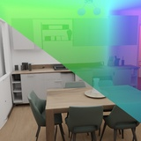
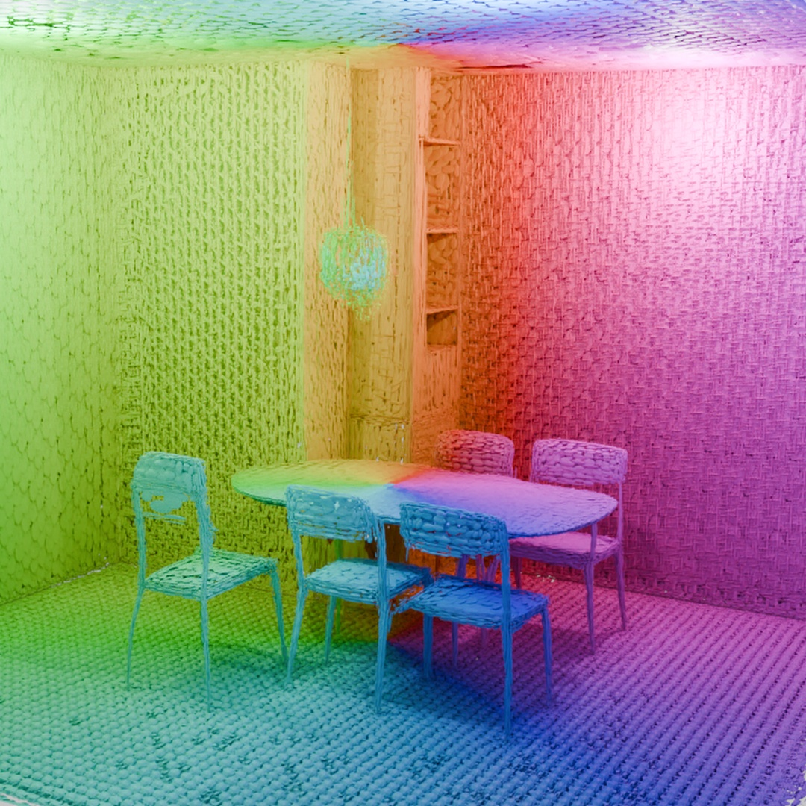

|
Nicolas von Lützow I'm a PhD candidate in the TUM Visual Computing and AI Lab under the supervision of Prof. Matthias Nießner. Before starting my PhD I studied Informatics (M.Sc.) at TUM and Computer Science (B.Sc.) at TUHH. My research interests lie in 3D generation, scene reconstruction, and novel view synthesis. |
{kind=link}
Publications |
|
 |
GenRecon: Bridging Generative Priors for Multi-View 3D Scene Reconstruction
Katharina Schmid, Nicolas von Lützow, Jozef Hladký, Angela Dai, Matthias Nießner arXiv, 2026 project page / arXiv / code / bibtex @article{schmid2026genreconbridginggenerativepriors,
author={Schmid, Katharina and von L{\"u}tzow, Nicolas and Hladk\'y, Jozef and Dai, Angela and Nie{\ss}ner, Matthias},
title={GenRecon: Bridging Generative Priors for Multi-View 3D Scene Reconstruction},
year={2026},
eprint={2605.23888},
archivePrefix={arXiv},
primaryClass={cs.CV},
url={https://arxiv.org/abs/2605.23888},
}
We reconstruct high-fidelity 3D scene meshes from multi-view RGB images by integrating generative 3D priors. Our method processes overlapping scene chunks with a unified 3D conditioning mechanism to produce complete, editable PBR reconstructions. |
|
 |
GaussianGPT: Towards Autoregressive 3D Gaussian Scene Generation
Nicolas von Lützow, Barbara Rössle, Katharina Schmid, Matthias Nießner ECCV, 2026 (Oral) project page / arXiv / code / bibtex @inproceedings{vonluetzow2026gaussiangpt,
title={GaussianGPT: Towards Autoregressive 3D Gaussian Scene Generation},
author={von L{\"u}tzow, Nicolas and R{\"o}{\ss}le, Barbara and Schmid, Katharina and Nie{\ss}ner, Matthias},
booktitle={European Conference on Computer Vision (ECCV)},
year={2026}
}
We introduce GaussianGPT, a transformer-based model that directly generates 3D Gaussians via next-token prediction, enabling full 3D scene generation, completion, and outpainting through autoregressive sampling. |

|
LinPrim: Linear Primitives for Differentiable Volumetric Rendering
Nicolas von Lützow, Matthias Nießner NeurIPS, 2025 project page / arXiv / code / bibtex @inproceedings{vonlinprim,
title={LinPrim: Linear Primitives for Differentiable Volumetric Rendering},
author={von L{\"u}tzow, Nicolas and Nie{\ss}ner, Matthias},
booktitle={The Thirty-ninth Annual Conference on Neural Information Processing Systems},
year={2025}
}
We develop a differentiable volumetric rendering framework that uses transparent polyhedral primitives to represent scenes and render them in real-time. The primitives offer a bounded and compact representation that improves performance on specular areas and achieves better depth estimates while remaining compatible with advances developed for 3D Gaussians. |
|
This website is based on Jon Barron's source code. |